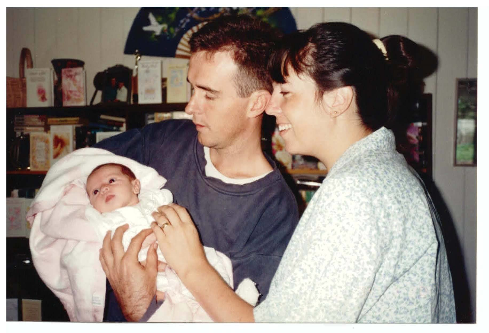

The Art of Failure

Engineering Mechanics
Engineering Maths 140
Engineering Graphics
Strength of Materials
Themodynamics
Mechanical Design
I probably shouldn't be studying Engineering
I failed. And that's ok.
Front End Jedi
Linkes long walks on the beach, singing in the rain, CSS Grid and React
Rock climber animation
Rock climbing gif
Rock climbing gif
Failure
Frustrated computer user
Doughnuts
Phones
Embrace Failure
People
Learn
D&D Game
You